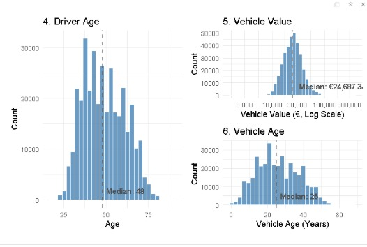

Insurance Portfolio Analysis
Key Findings & Strategic Insights
Table of Contents
- Overview & Setup
- Data Wrangling & KPI Engineering
- Exploratory Data Analysis (EDA) Baseline
- General Drivers: Product Risk & Retention
- Demographic Drivers: The Age Paradox
- Demographic Drivers: Frequency vs. Severity
- Asset Drivers: Vehicle Lifecycle Squeeze
- Asset Drivers: Fuel Bias in Pricing
- Key Findings Summary
- Strategic Recommendations
- Conclusion & Next Steps
This executive presentation covers the recent motor insurance portfolio analysis. The following slides detail a comprehensive evaluation of risk drivers to uncover hidden margin leakage and structural inefficiencies. The agenda moves logically from initial data preparation and baseline metrics into deep-dive bivariate analyses. Risk factors are categorized into three main pillars: General Drivers focusing on geography and products, Demographic Drivers focusing on the human element, and Asset Drivers evaluating the insured vehicles themselves. Isolating these specific areas enables a transition from broad reporting to highly targeted risk management. The session concludes with clear, data-driven strategic recommendations designed to optimize the pricing engine, restructure vulnerable policies, and improve overall portfolio profitability. Questions may be held until the end of the presentation, where a dedicated discussion on the methodologies and applications will take place.
1. Overview & Setup
- Objective: Identify margin leakage, pricing inefficiencies, and retention risks within the current motor insurance portfolio.
- Methodology: Utilize bivariate statistical analysis (ANOVA, Chi-Square, Logistic Regression) to validate observed business patterns.
- Target Audience: Pricing actuaries, product managers, and retention teams.
The primary objective of this analysis is to transition operations from basic historical reporting to proactive, data-driven risk management. The goal is to identify exact areas of margin leakage, pricing inefficiencies, and retention risks within the current motor insurance portfolio. To achieve this, the methodology relied heavily on bivariate statistical analysis. Instead of merely observing trends, observed business patterns were rigorously validated using statistical tests like ANOVA for continuous variables, Chi-Square for categorical churn, and Logistic Regression models. This ensures the findings represent true market realities rather than random data noise. The target audience for these insights includes pricing actuaries, product managers, and retention marketing teams. Pinpointing the exact underperforming demographics, vehicle types, and policy structures empowers these teams to confidently adjust premiums, rewrite terms, and deploy targeted campaigns without relying on outdated assumptions or intuition.
2. Data Wrangling & KPI Engineering
- Data Quality: Handled anomalies and dropped incomplete records (
drop_na).- Due to their size outliers remained in the dataset.
- Categorization: Bucketed continuous ages into discrete analytical tiers (e.g., Youth, Adult, New, Old).
- Feature Engineering: Calculated normalized KPIs:
- Loss Ratio: Total Incurred / Total Premium
- Claim Frequency: Total Claims / Total Exposure
- Claim Severity: Total Incurred / Total Claims (where Claims > 0)
- Premium Rate: Total Premium / Total Exposure
- Is Cancelled: If policy is active or cancelled
To ensure the analysis was structurally sound, rigorous data wrangling was essential. The process began with basic data quality checks, handling anomalies and dropping incomplete records to establish a pristine baseline. The most critical step, however, was feature engineering. Analyzing solely raw claim payouts is insufficient because policy exposure times vary drastically across the portfolio. To solve this, standardized Key Performance Indicators were engineered: Loss Ratio, annualized Claim Frequency, and Claim Severity. These normalized metrics allow risk to be evaluated uniformly on a level playing field, regardless of how long a customer has held a policy. Furthermore, continuous variables were categorized into discrete analytical tiers. Grouping specific driver and vehicle ages into structured buckets like ‘Youth’, ‘Adult’, ‘New’, and ‘Old’ enabled the clean, categorical groupings that are absolutely necessary for conducting the robust statistical variance testing presented in the upcoming slides.
3. Exploratory Data Analysis (EDA) Baseline


- Univariate Focus: Established baseline distributions before cross-referencing.
- General Metrics: Analyzed the central tendencies of premiums and the distribution of total incurred claims.
- Demographic & Asset Metrics: Mapped the structural composition of policyholders and insured vehicles to identify exposure concentrations.
Before diving into complex correlations, an Exploratory Data Analysis was conducted to establish the portfolio’s baseline distributions. This univariate approach is crucial because it visualizes the raw shape of the data and clarifies the foundational exposure. The central tendencies of the premium rates were analyzed, confirming their normal distribution, and the massive right-skewed outliers inherent in insurance claim payouts were isolated. Additionally, the structural composition of the policyholders and insured vehicles was mapped. It was necessary to understand the exact proportions of youth drivers versus seniors, and new cars versus aging models, currently represented in the dataset. Understanding this baseline exposure ensures that strategic recommendations are not over-indexed on statistically insignificant minority groups. It provides the necessary context to confirm that the anomalies identified later genuinely impact substantial segments of the overall business and warrant immediate executive intervention.
4. General Drivers: Product Risk & Retention

.jpeg)
- Anomaly (COMP_N): Frequency exceeds 1.043 claims per exposure year.
- Retention Crisis: Business Type P exhibits a 17.3% cancellation rate.
- Statistical Proof: Chi-Square testing confirmed the retention variance across business types is highly significant.
Moving into the bivariate analysis, the General Drivers evaluation uncovered two severe structural vulnerabilities regarding products and retention. First, the COMP_N policy type is heavily exploited. The data shows it averages more than 1.043 claims per exposure year—vastly outpacing standard third-party policies. This extreme frequency indicates severe moral hazard, suggesting this specific coverage is treated like a maintenance plan rather than emergency insurance. Second, Chi-square testing confirmed a highly significant retention crisis within Business Type P. This segment suffers a staggering 17.3 percent cancellation rate, which is more than double the churn seen in standard New Business lines. These specific customers are leaving at an alarming rate, completely wasting the high acquisition costs required to acquire them initially. Both of these metrics point to systemic structural flaws that require immediate remediation from product and marketing departments.
5. Demographic Drivers: The Age Paradox

- Youth (<25): Highest claim frequency, but most profitable segment (63.2% Loss Ratio).
- Adult (25-40): Lower claim frequency, but least profitable segment (73.6% Loss Ratio).
- Insight: The current model over-penalizes inexperienced drivers while under-pricing established adults.
Demographic testing revealed a fascinating and highly actionable pricing paradox. Conventional insurance wisdom dictates that young, inexperienced drivers represent the worst risk. While it is true that the Youth demographic, those under twenty-five, exhibits the highest frequency of accidents, the pricing model has overcompensated. Their premiums are loaded so heavily that they actually remain the most profitable segment, operating at a highly favorable 63.2 percent loss ratio. Conversely, established Adults aged twenty-five to forty are quietly draining the portfolio. Despite being safer drivers historically, they are operating at a 73.6 percent loss ratio, making them the least profitable segment. This proves that current premium rates are mathematically inadequate to cover the aggregate risk of this group. The current model over-penalizes inexperienced drivers while significantly under-pricing established adults, exposing a major inefficiency in demographic pricing multipliers that competitors could easily exploit if left uncorrected.
6. Demographic Drivers: Frequency vs. Severity
.jpeg)
- Frequency Trend: Strict downward linear progression as driver age increases.
- Severity Distribution: “U-shaped” curve for median payouts.
- Youth (<25): €713.75 median
- Adults (25-40): €599.66 median
- Seniors (60+): €714.47 median
When claim frequency is decoupled from claim severity, the mechanical driver behind the age paradox becomes explicitly clear. As expected, claim frequency follows a strict downward linear progression as drivers mature; older individuals simply experience fewer accidents. However, the severity of those accidents follows a distinct U-shaped distribution. The youngest drivers and the oldest seniors experience the most expensive median payouts when accidents occur—both exceeding 713 Euros on average. Interestingly, the middle-aged adult segment has the cheapest median accident payouts, coming in at just under 600 Euros. Yet, as established previously, the baseline premiums for this group are set so exceptionally low that they still generate the worst overall loss ratios. This severity analysis confirms that the current pricing engine is too heavily weighted toward accident frequency and fails to adequately account for the aggregate financial impact of the middle-aged adult demographic.
7. Asset Drivers: Vehicle Lifecycle Squeeze

- New Cars (0-2 Yrs): Highest frequency (0.571), yet highly profitable (66.2% LR).
- Mid-Aged Cars (3-7 Yrs): Moderate frequency, but worst profitability (74.8% LR).
- Old Cars (8+ Yrs): Lowest frequency (0.302), stable profitability (70.1% LR).
A nearly identical margin squeeze is observed when analyzing the vehicle lifecycle, shifting focus from the driver to the physical asset. Brand-new cars, aged zero to two years, exhibit the highest claim frequency. This is likely behavioral; owners of new vehicles are highly sensitive to minor cosmetic damage and file claims constantly. However, these new vehicles are priced correctly and remain highly profitable at a 66.2 percent loss ratio. The critical danger zone lies with mid-aged cars between three and seven years old. Despite a moderate claim frequency, they are the portfolio’s biggest liability, generating an unsustainable 74.8 percent aggregate loss ratio. This suggests a systemic vulnerability period where cars lose manufacturer warranties, prompting owners to lean on insurance for repairs, while the vehicles still retain enough value to command expensive part replacements. The current asset pricing model completely misses this mid-life risk spike.
8. Asset Drivers: Fuel Bias in Pricing
.jpeg)
- Severity Fact: Median payout for Diesel (€630.86) vs. Petrol (€679.64).
- ANOVA p-value: 0.5422 (Not Statistically Significant).
- Pricing Reality: Median premium for Diesel (€380.09) vs. Petrol (€307.69).
- ANOVA p-value: < 0.001 (Highly Significant).
The asset driver analysis also exposed a critical flaw in the pricing algorithm regarding fuel types. ANOVA testing on actual claim severity was run to determine if Diesel vehicles are inherently more expensive to repair than Petrol vehicles. The test yielded a p-value of 0.54, which statistically proves there is absolutely zero difference in the repair costs or severity between the two engine types. Despite this actuarial reality, the pricing engine heavily penalizes Diesel owners. The median base premium charged for a Diesel policy is significantly higher, at 380 Euros, compared to just 307 Euros for Petrol. Because the actual risk severity is identical, this unjustified surcharge acts as an artificial tax on Diesel customers. This arbitrary pricing bias risks driving a significant portion of the customer base straight to competitors who employ fairer, data-backed pricing models that do not penalize fuel choice.
9. Key Findings Summary
- Pricing Misalignments: Adult drivers (25-40) and mid-aged vehicles (3-7 yrs) are severely underpriced, breaking the 70% loss ratio target.
- Structural Vulnerabilities: COMP_N policies are fundamentally flawed regarding claim frequency.
- Retention Gaps: Business Type P requires immediate lifecycle marketing intervention.
- Algorithm Bias: Diesel vehicles face unjustified premium surcharges unrelated to actual severity.
To synthesize this exhaustive analysis, the portfolio is currently suffering from four distinct operational failures that require intervention. First, massive pricing misalignments were identified; the established adult driver demographic and the mid-aged vehicle segments are severely underpriced, consistently breaking the 70 percent loss ratio target. Second, structural vulnerabilities exist within the COMP_N product line, which is suffering from rampant frequency exploitation by policyholders. Third, a critical retention gap was isolated, revealing that Business Type P is churning at an unacceptable rate of over 17 percent. Finally, a definitive algorithmic bias was identified where Diesel vehicles face unjustified premium surcharges that are entirely unsupported by actual severity data. While none of these issues represent an existential threat to the company individually, collectively they represent a massive, ongoing margin leakage that artificially suppresses overall profitability and long-term portfolio stability.
10. Strategic Recommendations
- Rebalance the Pricing Engine:
- Increase rates for Adults (25-40) and Vehicles (3-7 yrs).
- Lower rates slightly for Youth (<25) to capture market share.
- Flatten the baseline fuel-type multiplier for Diesel.
- Overhaul COMP_N Coverage: Introduce higher deductibles and strict annual claim limits.
- Deploy Retention Interventions: Launch targeted loyalty campaigns for Business Type P customers pre-renewal.
These strategic recommendations are direct, data-backed responses to the statistical findings. First, the pricing engine must be rebalanced immediately. This involves executing targeted rate increases on the adult demographic and mid-aged vehicles, while flattening the unjustified penalty on Diesel engines. There is also margin flexibility to slightly lower youth premiums to aggressively capture market share. Second, product managers must overhaul the COMP_N coverage. To stop the frequency abuse, introducing higher deductibles and strict annual claim limits is recommended. Third, immediate retention interventions must be deployed. Customer success teams should launch targeted loyalty campaigns specifically for Business Type P customers before their renewal dates arrive. By aligning premiums with true statistical risk and actively managing vulnerable product lines, it is possible to rapidly close these margin leaks and build a far more resilient and profitable insurance portfolio for the upcoming fiscal year.
11. Conclusion & Next Steps
- Current Status: Core portfolio is stable, but segmented margin leakage is substantial.
- Immediate Actions:
- Actuarial review of Adult/Mid-Aged vehicle base rates.
- Product review of COMP_N terms and conditions.
- Marketing mobilization for Business Type P retention.
In conclusion, while the foundational health of the motor insurance portfolio remains generally stable, surgically addressing these isolated areas of margin leakage will yield massive, immediate improvements to the aggregate bottom line. The path forward is clear and requires cross-departmental collaboration. The immediate next steps involve handing these statistical validations over to the actuarial team to adjust the Adult and Mid-Aged vehicle base rates. Simultaneously, the product team must be briefed to initiate the review of the COMP_N terms and conditions, and the marketing department must be mobilized for the Business Type P retention campaign. Appreciation is extended for the time, focus, and dedication given to this data-driven approach today. The floor is now open for any questions regarding the statistical methodologies, the specific demographic findings, or the execution plans for these strategic applications in the coming weeks.